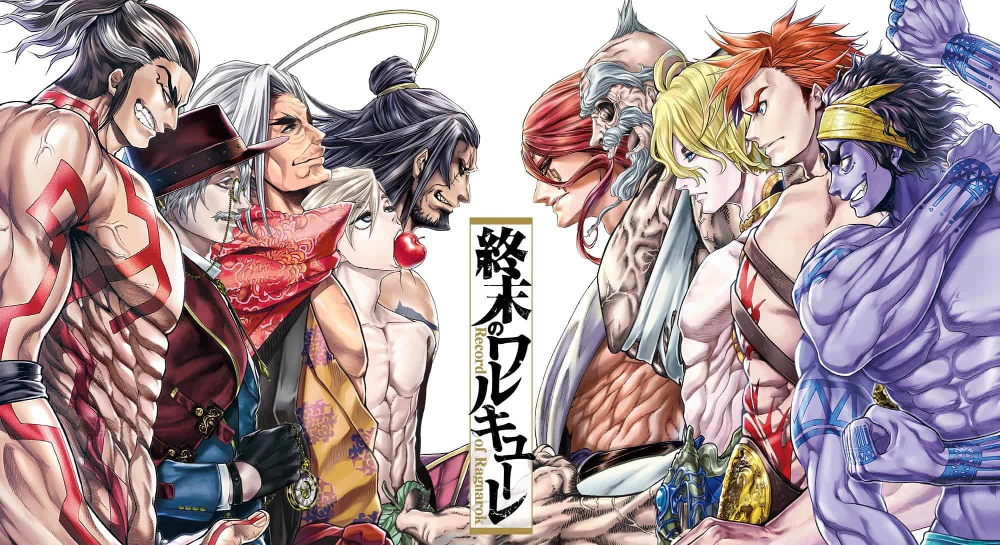
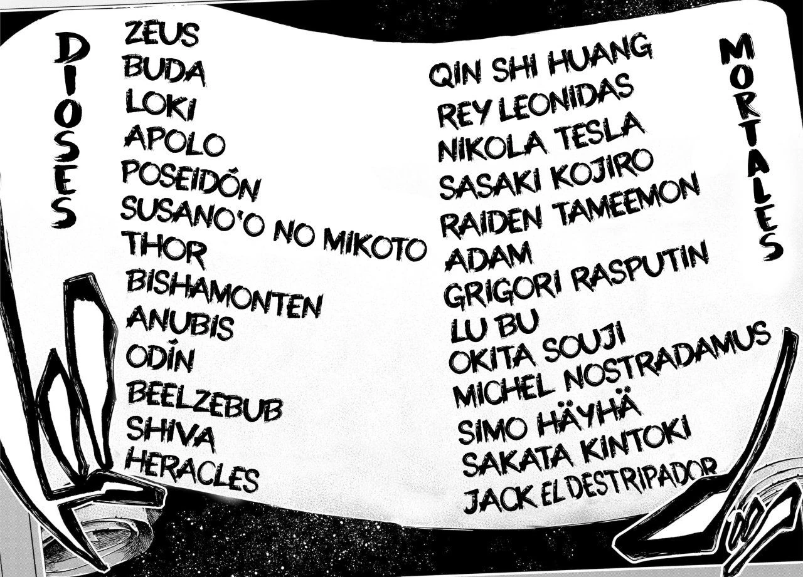
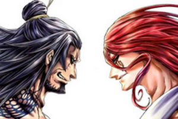
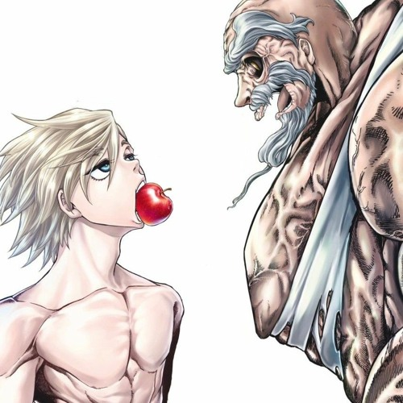
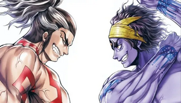
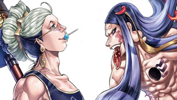
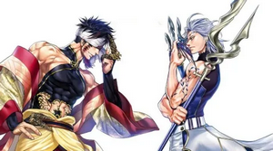
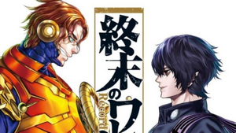
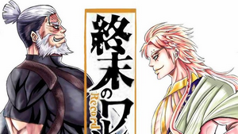

Presentación Record of Ragnarok
Estos ultimos dias estuve bastante inmerso en una nueva lectura la cual se llama record of ragnarok el cual tiene la siguiente premisa:

Record of Ragnarok es escrito por Takumi Fukui y Shinya Umemura e ilustrado por Chika Aji el cual comenzo su serialización en noviembre de 2017.
Esta historia nos situa en congreso del Valhalla , una reunión de todos los dioses del
mundo celebrada cada 1000 años en donde decidieron la completa extincion de la humanidad.
Las únicas en oponerse a este veredicto fueron las valquirias, cuya líder, Brünnhilde, propuso una última oportunidad: el Ragnarok, un torneo que
enfrentaría a 13 humanos contra 13 dioses en combate individual.
En el improbable caso de que los humanos consiguieran 7 victorias, se les permitiría vivir por 1000 años más.
Y así da comienzo a una serie de batallas donde los más grandes hombres de la historia se opondrán a las deidades más poderosas con el objetivo de asegurar la salvación de la humanidad.
Lista de combatientes:
Dioses:
1. Zeus
2. Buda
3. Loki
4. Apolo
5. Poseidón
6. Susano'o no Mikoto
7. Thor
8. Bishamonten
9. Anubis
10. Odín
11. Beelzebub
12. Shiva
13. Heracles

Humanos:
1. Qin Shi Huang
2. Rey Leonidas
3. Nikola Tesla
4. Sasaki Kojiro
5. Raiden Tameemon
6. Adán
7. Grigori Rasputin
8. Lü Bu
9. Okita Souji
10. Michel Nostradamus
11. Simo Häyhä
12. Sakata Kintoki
13. Jack el destripador
Lista de peleas dadas hasta la fecha (Febrero 2024):
1. Lü Bu vs Thor - Duracion combate: 16 minutos y 28 segundos

2. Adán vs Zeus - Duracion combate: 7 minutos y 13 segundos

3. Sasaki Kojiro vs Poseidon - Duracion combate: 13 minutos y 7 segundos
4. Jack el Destripador vs Hercules - Duracion combate: 26 minutos y 57 segundos
5. Raiden Tameemon vs Shiva - Duracion combate: 11 minutos y 16 segundos

6. Buda vs Bishamonten / Zerofuku / Hajun - Duracion combate: 21 minutos y 37 segundos

7. Qin Shi Huang vs Hades - Duracion combate: 12 minutos y 57 segundos

8. Nikola Tesla vs Beelzebub - Duracion combate: 18 minutos y 6 segundos

9. Leónidas vs Apolo- Duracion combate: 9 minutos y 30 segundos

10. Soji Okita vs Susano'o no Mikoto - Duracion combate: ???
Resultados hasta ahora Humanos 4 - 5 Dioses
¿Donde Leer esta historia? : Link para leer
Juan Pablo Montoya Jimenez - Tecnologias Web - Universidad Catolica Boliviana